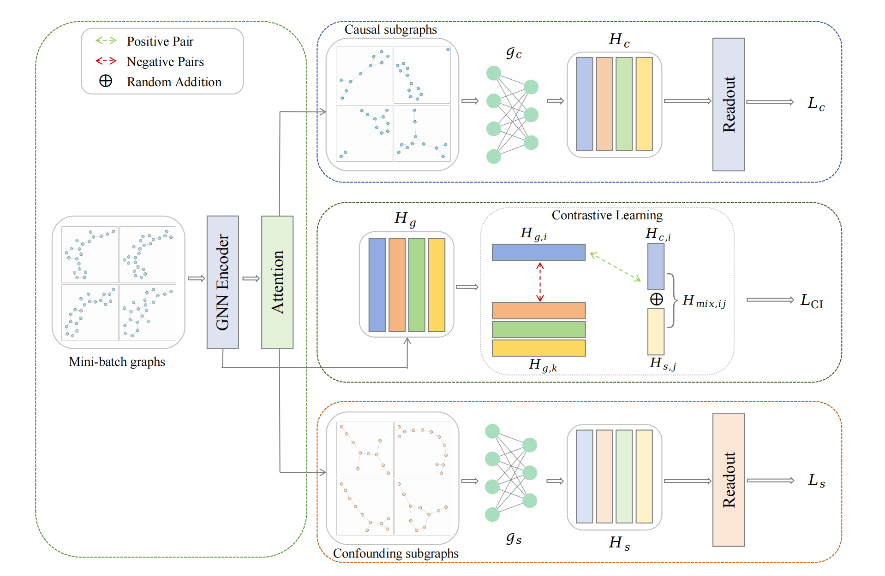
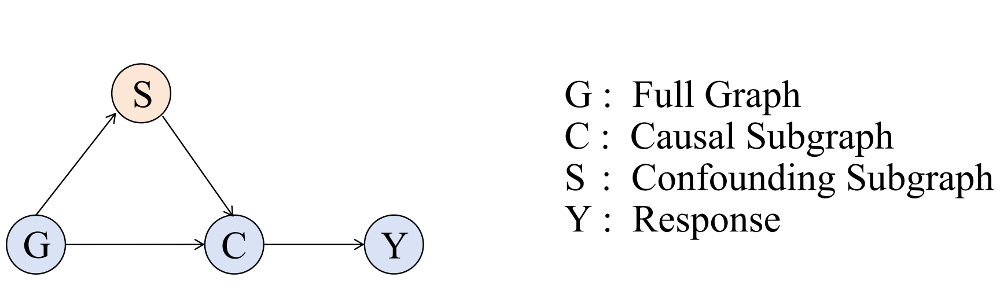
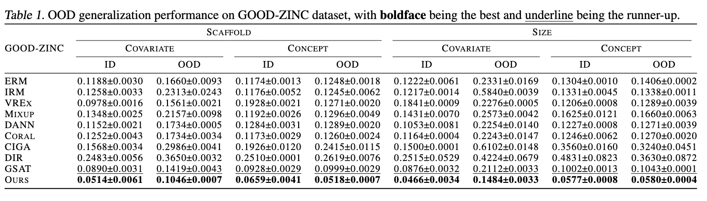
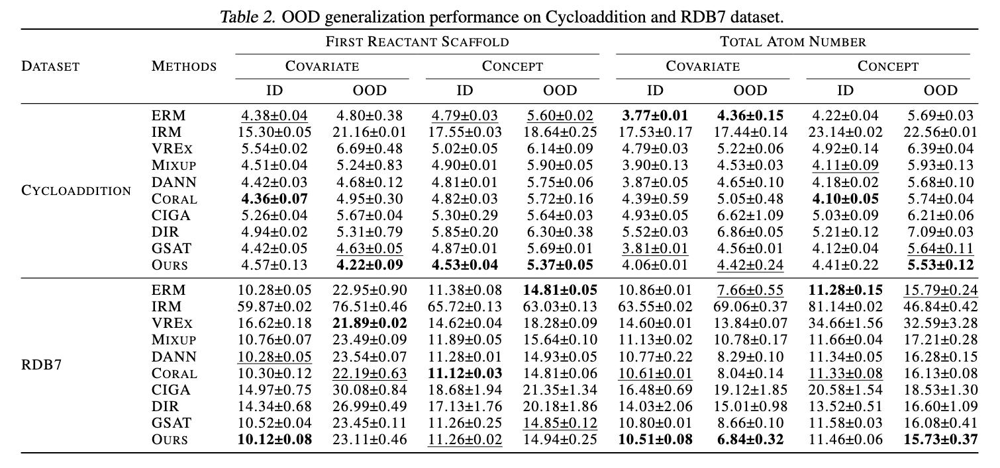
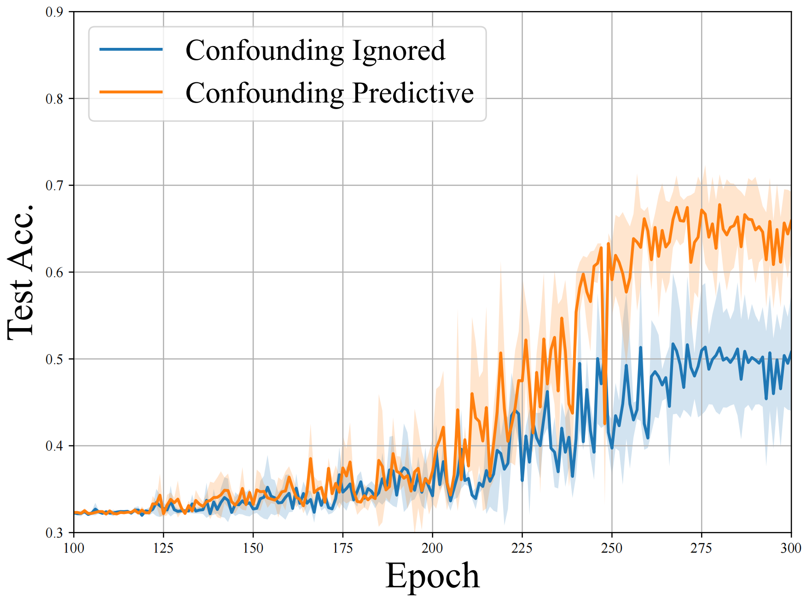
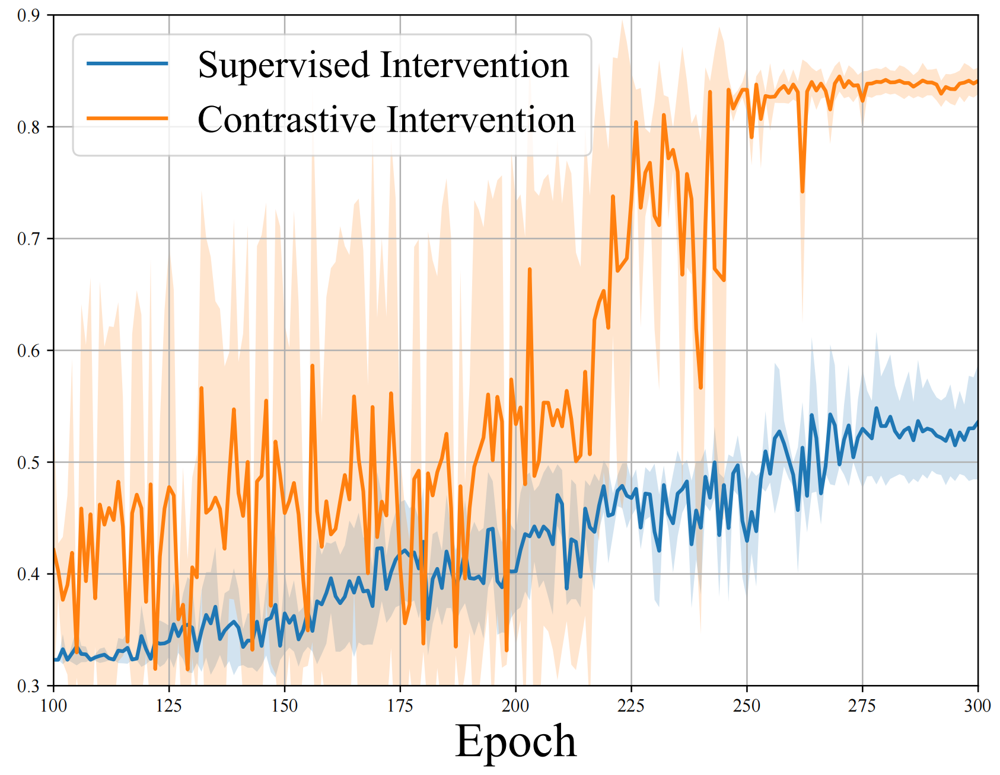

A Recipe for Causal Graph Regression:
Confounding Effects Revisited
Problem and Why It Matters
- Most causal graph OOD methods target classification, not regression.
- Regression is harder: continuous targets weaken label-dependent intervention.
- Confounders can still be predictive in real-world graph regression.
Our Idea
Treat confounders as potentially predictive, and learn intervention through contrastive training to preserve causal signal while suppressing spurious shortcuts.
Contributions
- First systematic framework for causal graph regression.
- Enhanced GIB objective modeling predictive confounders.
- Label-agnostic contrastive intervention loss.
Method Overview

Enhanced GIB Objective
$$L_{\mathrm{GIB}}=L_c+\beta L_s=-I(C;Y)+\alpha I(C;G)-\beta I(S;Y)$$
- $L_c$: prediction from causal representation.
- $L_s$: confounding branch objective.
- $\alpha,\beta$: trade-off coefficients.

Contrastive Intervention
$$L_{\mathrm{CI}}=-\frac{1}{B}\sum_{i=1}^{B}\log\frac{\exp\big(\mathrm{sim}(H_{g,i},H_{\mathrm{mix},ij})\big)}{\sum_{k=1,\,k\ne i}^{B}\exp\big(\mathrm{sim}(H_{g,i},H_{g,k})\big)}$$
$$L=L_{\mathrm{GIB}}+\lambda L_{\mathrm{CI}}$$
Main Regression Results


6/10Best OOD RMSE settings
2xMargin over second-best in key splits
Ablation Evidence


Take-home Messages
- CGR provides a causal learning recipe specialized for graph regression under OOD shifts.
- Treating confounders as predictive-but-spurious improves disentanglement and robustness.
- Contrastive intervention consistently improves OOD performance on GOOD-ZINC and ReactionOOD.